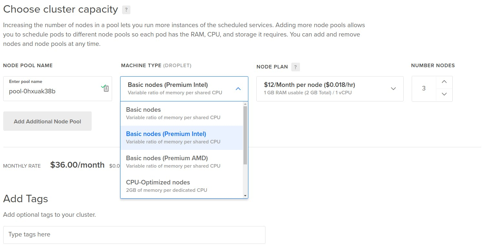

<!-- <app-categories-list [topics]="topics"></app-categories-list> -->
<div class="container-fluid">
  <div class="row">
    <div class="col-lg-10 m-auto">
      <div class="row" id="postDetailContainer">
        <div class="col-lg-3">
          <app-categories-list [topics]="topics"> </app-categories-list>
        </div>
        <div class="col-lg-9 postDetail" *ngFor="let post of postData">
          <h1 class="heading">
            {{ post.postTitle }}
          </h1>
          <span class="postDate">
            Posted 2021-02-23 in <a href="#">Product Updates</a>
          </span>
          

          <div class="postAuthor">
            <div class="authorImg">
              
            </div>
            <div class="authorName">By <a href="#">Ryan Pollock</a></div>
          </div>
          <div class="description">
            <p>
              Rockstar Tom Petty put it this way: “the waiting is the hardest
              part.”
            </p>

            <p class="mt-3">
              What a simple and profound statement that we all know to be true.
            </p>

            <p class="mt-3">
              Every nanosecond your customers wait is hard on them, and can
              ultimately be so frustrating that they quit using your app in
              search of a faster or more responsive alternative.
            </p>
            <p class="mt-3">
              That’s why we’re introducing Premium Droplets with faster Intel
              and AMD CPUs, along with NVMe SSD. With these new Droplets, you
              can be certain that you’re running your apps with modern hardware
              that delivers the fast performance your customers demand and
              deserve.
            </p>
            <h2 class="heading2 mt-5">
              Our latest, greatest CPUs and modern, high performance disks
            </h2>
            <p>
              Premium Droplets are guaranteed to utilize some of the newest CPUs
              we have in our fleet.
            </p>
            <ul class="mt-3">
              <li>
                <p>
                  Intel Premium Droplets currently run
                  <a href="#"
                    >second generation Intel Xeon Scalable processors</a
                  >, which feature what’s commonly referred to as the Cascade
                  Lake architecture. These Intel CPUs operate at a base
                  frequency of 2.50 GHz and max turbo frequency of 3.90 GHz.
                </p>
              </li>
              <li>
                <p>
                  AMD Premium Droplets currently run
                  <a href="#">2nd Generation AMD EPYC™ processors</a>, based
                  upon the “Zen 2” architecture, which feature what’s commonly
                  referred to as the Rome architecture. These AMD EPYC CPUs
                  operate at a base frequency of 2.0 GHz and a max turbo
                  frequency of 3.35 GHz.
                </p>
              </li>
            </ul>
            <p>
              One important aspect of our new Premium Droplets is their enhanced
              memory performance, which can play a significant factor in
              workloads like in-memory databases and server-side caches for web
              apps. Our Premium AMD Droplets feature memory frequency of 3200
              MHz, and Premium Intel 2933 MHz.
            </p>
            <p class="mt-3">
              As for the disk aspect of your Premium Droplets – NVMe SSDs take
              advantage of parallelism to deliver disk performance that can be
              an order of magnitude faster than regular SSDs. If you’re running
              workloads that require a large number of transactions, you’ll
              achieve much lower latency with NVMe SSDs.
            </p>
            <h2 class="heading2 mt-4">More speed, same simplicity</h2>
            <p class="mt-3">
              Our commitment to simplicity is reflected in all we do, and we’ve
              applied our usual developer-friendly aesthetic to these new
              offerings. With today’s launch, when you go to the control panel
              to spin up Droplets, you’ll see new options for Premium Intel and
              AMD within our Basic plan. You can also find slugs for Premium
              Droplets for use with our CLI, API, or extensions like our
              Terraform provider.
            </p>
            <div class="mediaContainer mt-5">
              <iframe
                width="790"
                height="450"
                src="https://www.youtube.com/embed/cO9lk2kUX5M"
                frameborder="0"
                allow="accelerometer; autoplay; clipboard-write; encrypted-media; gyroscope; picture-in-picture"
                allowfullscreen
              ></iframe>
            </div>
            <p class="mt-4">
              You can also use Premium Droplets as worker nodes with
              <a href="#"> DigitalOcean Kubernetes.</a>
            </p>
            
          </div>
        </div>
      </div>
    </div>
  </div>
</div>

<!--
   -->
